Оперативники Rainbow Six siege
Описание оперативников
Штурмотряд
Sledge
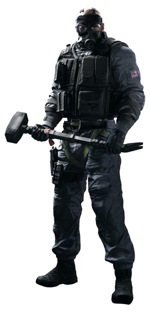
Шеймус "Sledge" Коуден (англ. Seamus Cowden) — один из атакующих оперативников, представленных в Tom Clancy's Rainbow Six: Siege. Он оснащен средним показателем брони и скорости. Его особый гаджет — Кувалда, способна уничтожать любые разрушаемые объекты.
Thatcher
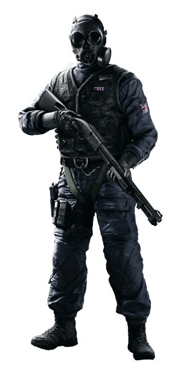
Майк «Thatcher» Бейкер (англ. Mike Baker) — один из атакующих оперативников, представленных в Tom Clancy's Rainbow Six: Siege. Он оснащен среднем показателем брони и скорости. Его особый гаджет — «ЭМИ-граната», на время деактивирующий всю электронику в области поражения.
Ash

Элиза «Ash» Коэн (англ. Eliza Cohen) – один из атакующих оперативников, представленных в Tom Clancy's Rainbow Six Siege. Она оснащена легким типом брони, но большой подвижностью. Её особый гаджет — гранатомёт M120 CREM, который может выпускать пробивные снаряды.
Thermite

Джордан "Thermite" Трэйс (англ. Jordan Trace) – один из атакующих оперативников, представленных в Tom Clancy's Rainbow Six: Siege. Он оснащён средним показателем брони и скорости. Его особый гаджет – Термозаряд УТВ-3 "Пепел", улучшенный пробивной заряд.
Twitch
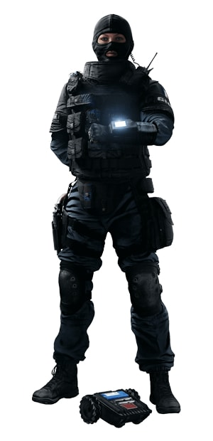
Эммануэль «Twitch» Пишон (фр. Emmanuelle Pichon) – один из атакующих оперативников, представленных в Tom Clancy's Rainbow Six: Siege. Она оснащена средним показателем брони и скорости. Её особый гаджет – Шок-бот улучшенный дрон способный стрелять зарядами тазера. Может уничтожать вражеские гаджеты или наносить урон оперативникам.
Montagne
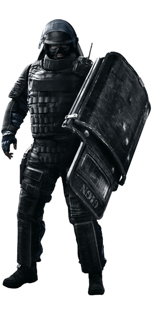
Жиль "Montagne" Туре (фр. Gilles Touré) — один из атакующих оперативников, представленных в Tom Clancy's Rainbow Six: Siege. Он оснащен тяжелом типом брони и низкой скоростью передвижения. Его особый "гаджет" — ростовой щит "Скала".
Glaz
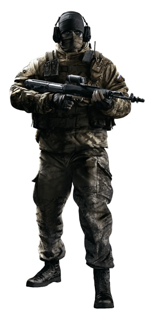
Тимур "Glaz" Глазков — один из атакующих оперативников, представленных в Tom Clancy's Rainbow Six: Siege. Он оснащён средним показателем брони и скорости. Владеет снайперской винтовкой, оснащённой специальным прицелом "Зрачок".
Fuze
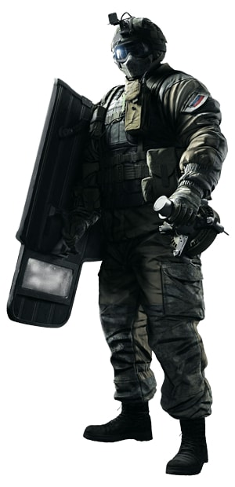
Шухрат "Fuze" Кесикбаев (узб. Shuhrat Kessikbayev) — один из атакующих оперативников, представленных в Tom Clancy's Rainbow Six: Siege. Он оснащен тяжёлым типом брони, но низкой скоростью передвижения. Владеет особым гаджетом КЗ-3 "Матрёшка".
Blitz
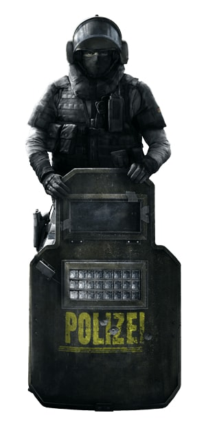
Элиас "Blitz" Кётц (нем. Elias Kötz) — один из атакующих оперативников, представленных в Tom Clancy's Rainbow Six: Siege. Он оснащен средними показателями брони и скорости передвижения. Его щит оснащен "Прожекторами", которые могут создавать вспышки света, ослепляя других оперативников.
IQ
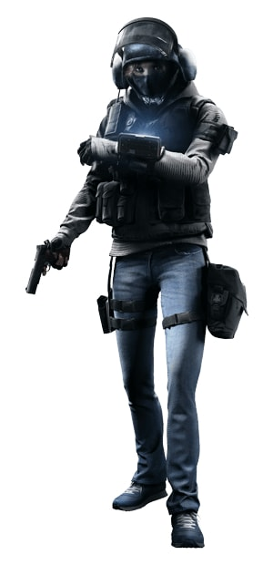
Моника "IQ" Вайс (нем. Monika Weiss) — один из атакующих оперативников, представленных в Tom Clancy's Rainbow Six: Siege. Она оснащена легким типом брони и большой скоростью передвижения. Её особый гаджет «Детектор Электроники Дистанционный» позволяет замечать практически все технические устройства через стены.
Защитники
Smoke
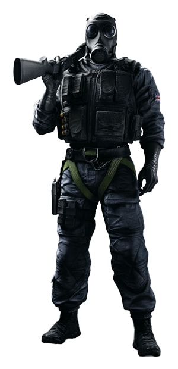
Джеймс "Smoke" Портер (англ. James Porter) — один из оперативников защиты, представленных в Tom Clancy's Rainbow Six: Siege. Он оснащен средним показателем брони и скорости. В арсенале у Smoke имеются три заряда "Реагент Z8".
Mute
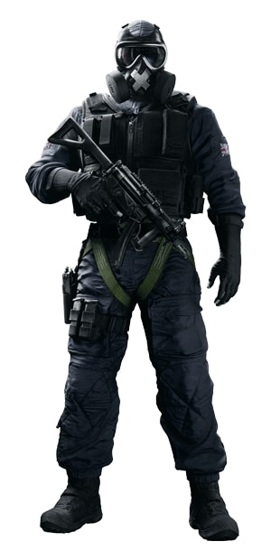
Марк «Mute» Чандар (англ. Mark R. Chandar) — один из оперативников защиты, представленных в Tom Clancy's Rainbow Six: Siege. Оснащен средним показателем брони и скорости. Его особый гаджет, «Генератор помех», блокирует действие всех вражеских электронных устройств.
Castle

Майлз «Castle» Кэмпбел (англ. Miles Campbell) — один из оперативников защиты, представленных в Tom Clancy's Rainbow Six: Siege. Он оснащен среднем показателем брони и скорости. Его особый гаджет — «Бронепанель» может перекрыть вход через окна или двери, которую невозможно сломать или пробить почти любым обычным оружием.
Pulse

Джек "Pulse" Эстрада (англ. Jack Estrada) – один из оперативников защиты, представленных в Tom Clancy's Rainbow Six: Siege. Он оснащен лёгким типом брони, но большой подвижностью. Владеет особым гаджет "Датчик сердцебиения".
Doc
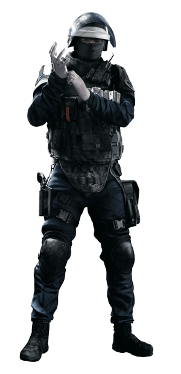
Гюстав "Doc" Катеб (фр. Gustave Kateb) — один из оперативников защиты, представленных в Tom Clancy's Rainbow Six: Siege. Он оснащен тяжелым типом брони и имеет низкую мобильность. Может вылечить себя и союзников с помощью "MPD-0 Stim Pistol".
Rook
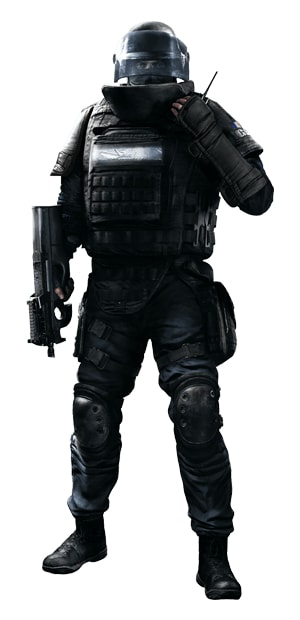
Жюльен "Rook" Низан (фр. Julien Nizan) — один из оперативников защиты, представленных в Tom Clancy's Rainbow Six: Siege. Он оснащен тяжелом типом брони и имеет низкую скорость передвижения. Его особый гаджет, сумка с заплатками для брони R1N "Rhino".
Kapkan
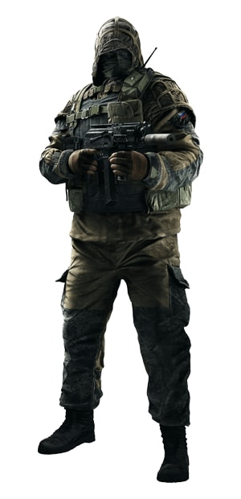
Максим "Kapkan" Басуда — один из оперативников защиты, представленных в Tom Clancy's Rainbow Six: Siege. Он оснащен средним показателем брони и скорости. Kapkan специализируется на установке минных ловушек "EDD MKII".
Tachanka
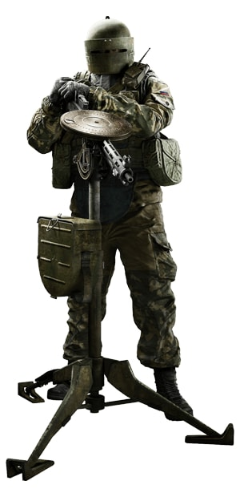
Александр "Tachankin" Сенавьев — один из оперативников защиты, представленных в Tom Clancy's Rainbow Six: Siege. Он оснащен тяжелым типом брони, но имеет низкую мобильность. Особый гаджет "Шумиха"-ручной гранатомёт с зажигательными зарядами.
Jager
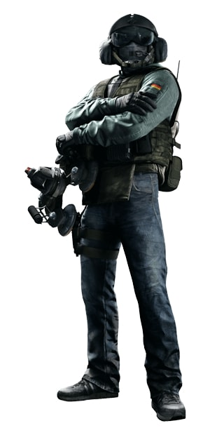
Мариус "Jäger" Штрайхер (нем. Marius Streicher) — один из оперативников защиты, представленных в Tom Clancy's Rainbow Six: Siege. Он оснащен средним типом брони и средней подвижностью. Его особый гаджет СОГ М IV "Сорока".
Bandit

Доминик «Bandit» Брунсмайер (нем. Dominic Brunsmeier) — один из оперативников защиты, представленных в Tom Clancy's Rainbow Six: Siege. Его особый гаджет — «УПТ-1» проводит ток через металлические объекты.